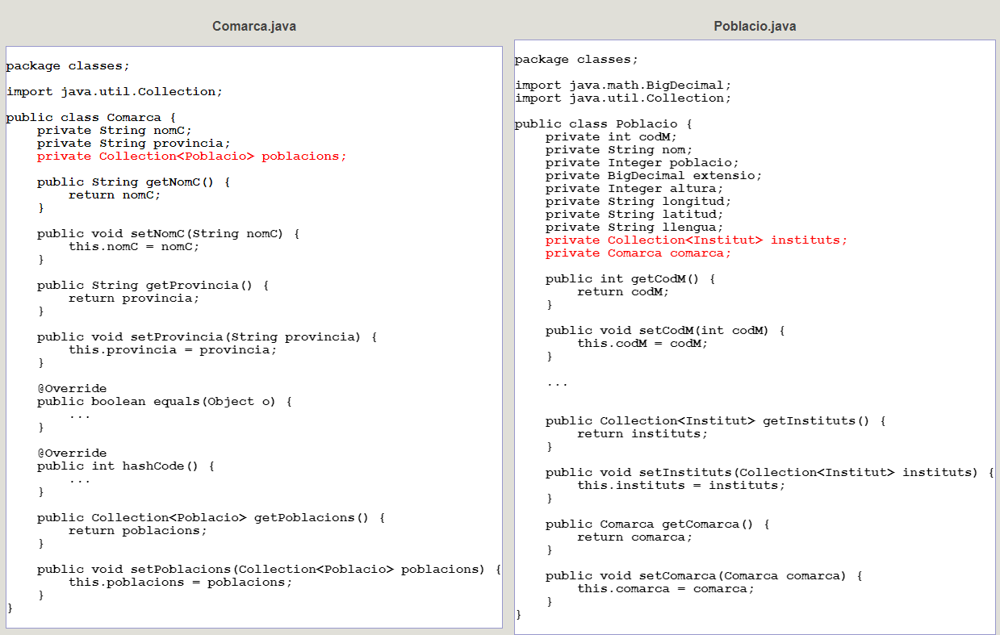

6 - Classes generades
Comentem les classe que ha generat automàticament Hibernate.
Són classes Java. Podríem traduir-les perfectament a Kotlin. Però optarem per no canviar-les per fer el procés més senzill.
Posarà una propietat per cada camp de la taula, i alguna cosa més com veurem més endavant. També posarà un mètode get i un set per a cada propietat, ja que les propietats seran private.
A continuació mostrem 2 de les classes. En el cas de Poblacio.java no hem posat tots els mètodes get i set , ja que sempre són com cabria esperar. I en roig teniu el més destacable.

Sens dubte, el més destacable de la classe Comarca és que en les propietats, posa també una col·lecció d'objectes Poblacio. Açò ens permetrà accedir comodíssimament a les poblacions d'una determinada comarca. Aquest conjunt sempre l'intenta anomenar com la classe a què fa referència, però en plural (en el nostre cas seria poblacios) encara que en el moment de dissenyar el mapatge podem canviar aquest nom. Una col·lacció (Collection) té un comportament relativament senzill per a accedir als seus elements.
En la classe Poblacio , tindrem les propietats que cabria esperar. I la referència a la comarca és un objecte de la classe Comarca. També tindrà un conjunt d'objectes Institut.
Per tant, i en resum, una cosa molt útil que fa Hibernate quan troba una clau externa, és posar en la classe corresponent a la taula on està la clau externa una propietat de la classe corresponent a la taula principal (cosa que en principi cabria esperar); però també en la classe corresponent a la taula principal, un conjunt d'objectes de la classe corresponent a l'altra taula, la qual cosa ens permetrà accedir fàcilment.
Llicenciat sota la Llicència Creative Commons Reconeixement NoComercial CompartirIgual 2.5